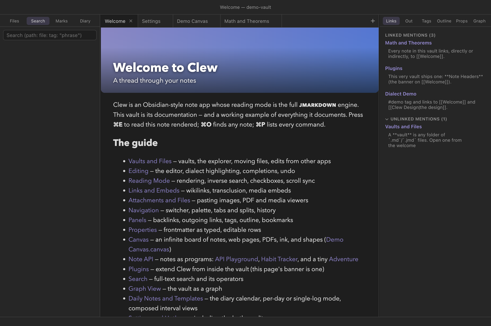
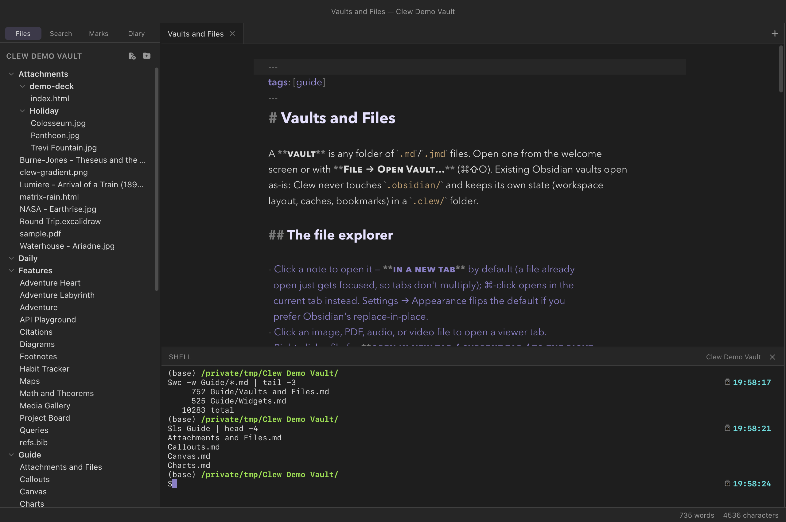

Workspace
Panels
Two sidebars frame the workspace. The left one is about the vault as a whole — its files, its search, your bookmarks, the diary calendar. The right one is about the note you are looking at — who links to it, what it links to, its tags, its outline, its properties, and its immediate neighbourhood in the graph. This chapter walks through every panel, with particular attention to the backlinks panel, whose unlinked mentions quietly do more work than anything else in the sidebar.
How the sidebars work
Each sidebar carries a row of tool tabs across its top; clicking one swaps the panel below. The left sidebar offers Files, Search, Marks (bookmarks), and Diary; the right offers Links (backlinks), Out (outgoing links), Tags, Outline, Props (properties), and Graph (a local graph) — plus Refs (the active note's bibliography) in vaults that enable it.
⌘B toggles the left sidebar and ⌘⇧B the right one (also View → Left/Right Sidebar). Drag a sidebar's inner edge to resize it. Which tool is selected, whether each sidebar is open, and both widths are saved with the rest of the workspace layout, per vault. A few commands land on a specific panel directly: ⌘⇧F opens the left sidebar on Search with the input focused, Open properties panel (View → Properties Panel) opens the right sidebar on Props, and Open diary calendar (Go → Diary Calendar) opens the left sidebar on Diary.
Every right-sidebar panel tracks the active tab: switch tabs or panes and the backlinks, outline, properties, and local graph all follow. The panels read from Clew's metadata index, which updates when a note is saved — and since auto-save runs about a second after you stop typing, the sidebar is never more than a moment behind the editor.
The left sidebar
Files
The file explorer: the vault's folder tree, with creation, renaming, moving, and deletion. It has its own chapter — see Vaults and files for the tree itself and Attachments and files for how non-note files behave.
Search
Full-text search over the whole vault, with operators for paths, file names, tags, and quoted phrases. It is covered in its own chapter: Search.
Marks (bookmarks)
Bookmarks are a hand-picked list of notes you want a fixed handle on. Bookmark the active note with Bookmark / unbookmark active note from the command palette, or File → Bookmark This Note (a checkmark shows the current state). The Marks panel lists every bookmarked note in the order you added them: click one to open it, ⌘-click to open it in a new tab, and right-click for Remove bookmark. Running the bookmark command again on an already-bookmarked note also removes it.
Bookmarks are stored per vault in .clew/bookmarks.json, and
they follow renames: moving or renaming a bookmarked note (or a folder
above it) through Clew updates the bookmark rather than breaking it.
Diary
A month-grid calendar with a dot on every day that has a diary entry; click any day to open it, or create it if it does not exist yet. The controls above the grid build composed views of a day, an interval, or the whole diary. The diary — including its two modes, one-note-per-day and single-log — has its own chapter: Daily notes and the diary.
Links: backlinks and unlinked mentions
The Links panel answers the question every linked-notes app exists to answer: who points here? It has two sections.
Linked mentions lists every note containing a wikilink to the active note, grouped by source note, with the count in the section title. Under each source you see the actual line each link sits on, as a context snippet. Click the source's name to open that note; click a snippet to open the note at that exact line, in source mode with the cursor placed — no scanning around for where the link was.
Unlinked mentions is the more interesting half: places
where the active note's name — or any of its frontmatter aliases —
appears in plain prose without being a link. Matching is
case-insensitive and word-bounded (a note called Graph does
not match photograph), skips occurrences already inside a
wikilink, skips tags, and ignores text inside code fences, inline code,
and script blocks, because code is not prose. Each mention shows its
snippet, and hovering reveals a Link button: press it
and Clew rewrites the occurrence in place, turning the plain words into
[[Note]] — or [[Note|alias]] when the mention
matched an alias, so the visible text is preserved. The edit goes
through the open editor when the source note has one (so it is undoable
there), and straight to disk otherwise. The section is collapsible via
its header.

Out: outgoing links
The mirror image: every wikilink leaving the active note, in
two groups. Links are resolved — their targets exist —
and clicking one opens the target (honouring any
#Heading fragment). Unresolved links point
at notes that do not exist yet; clicking one creates the note, exactly
as clicking the link in the note would. That makes the panel a to-do
list of stubs: draft freely, linking things that ought to exist, then
work down the unresolved list turning red links into notes.
Tags
Every tag in the vault with its usage count, sorted busiest first.
Click a tag to expand the list of notes carrying it, inline; click a
note to open it. Nested tags such as #project/clew appear
whole. For more powerful tag queries — combining a tag with text terms
or path filters — use the tag: operator in
search, or build a live table with a
query.
Outline
The active note's heading tree, indented by heading level. Click any heading to jump the editor to it. The outline reads from the metadata index, so it reflects the note as of its last save — with auto-save, within about a second of typing. For long structured notes this pairs well with a split: outline in the sidebar, source and reading mode side by side.
Props
The active note's frontmatter properties as editable rows. This panel has its own chapter — see Properties and metadata.
Refs: the References panel
In vaults with a bibliography configured, an optional Refs
tab shows the active note's formatted references — every work the note
cites, set in the vault's citation style (or the note's own, when its
properties override it). The list updates as the note re-renders, and it
works in source mode too, so you can watch the reference list grow while
you draft. The note itself needs no inline @bibliography
block. Switch the tab on per vault in
Settings → This vault; the details live in
Citations and bibliographies.
Graph
A local graph of the active note's immediate neighbourhood: the note at the centre and everything one link away, in either direction. It is the same component as the full graph view, scoped down to the note at hand — a quick visual answer to "what is around this note?" without leaving the sidebar.
The shell panel
⌃` — or View → Shell Panel — opens a terminal
along the bottom of the middle pane, under the tabs and above the status
bar. Drag its top edge to resize it; the height is remembered per vault,
like a sidebar's width. It is your own login shell (whatever
$SHELL says), started in the vault's root folder, with no
wrapper and nothing filtered: git status, a build, a
grep across the notes, pandoc — whatever you
would run in Terminal, run where the notes are.
One shell per window, and it keeps running while the panel is hidden. Closing the panel is not closing the shell, which is the point: start a build, press ⌃`, go back to writing, and press it again to see how the build got on. The shell ends when its window does. Pressing ⌃` while the caret is in the terminal closes the panel rather than typing a backtick.

Guide/*.md means what you
would expect it to mean.
It is a real terminal, not a log pane — it runs under a pty, so prompts,
colour, progress bars and full-screen programs (vim,
htop, less) all behave. Resizing the panel
reflows them. The one thing it needs is a python3 on the
machine, which macOS and every Linux distribution ship; without one Clew
falls back to a plain pipe — commands still run, but there is no prompt
and no colour, and the panel says so when it opens.
The status bar
Along the window's bottom edge, the status bar shows a live word count and character count for the active note, updating as you type. Words are counted as runs of letters and digits, with apostrophes and hyphens kept inside a word — doesn't and front-matter each count once. When the active tab is not a note — a canvas, the graph, settings — the status bar is empty.
.clew/bookmarks.json, the chosen tools and sidebar widths
in .clew/workspace.json — lives in .clew/,
which Obsidian ignores. Obsidian's own bookmarks and layout in
.obsidian/ are equally invisible to Clew, so each app
keeps its own sidebar state over the same notes. The Link button's
rewrites, by contrast, edit the notes themselves — those are ordinary
wikilinks Obsidian resolves identically.
Reference
The full panel set. Hotkeys shown are macOS; on Windows and Linux read ⌘ as Ctrl and ⌥ as Alt.
| Panel | Sidebar | Shows | Reached by |
|---|---|---|---|
| Files | Left | The vault's folder tree | Tool tab · ⌘B toggles the sidebar |
| Search | Left | Full-text search results | ⌘⇧F or the tool tab |
| Marks | Left | Bookmarked notes | Tool tab; bookmark via palette or File menu |
| Diary | Left | Month calendar with entry dots | Tool tab or Go → Diary Calendar |
| Links | Right | Backlinks and unlinked mentions | Tool tab · ⌘⇧B toggles the sidebar |
| Out | Right | Outgoing links, resolved and unresolved | Tool tab |
| Tags | Right | All tags with counts; expandable note lists | Tool tab |
| Outline | Right | The active note's heading tree | Tool tab |
| Refs | Right | The active note's formatted bibliography (vaults that enable it) | Tool tab · Settings → This vault |
| Props | Right | Frontmatter properties, editable | Tool tab or View → Properties Panel |
| Graph | Right | Local graph, one link deep | Tool tab |
| Shell | Bottom | A terminal at the vault root | ⌃` or View → Shell Panel |
See also
- Search — the Search panel in full, including every operator.
- Properties and metadata — the Props panel and the frontmatter it edits.
- Links and embeds — the wikilinks the Links and Out panels index.
- Graph view — the full-vault version of the local graph.
- Daily notes and the diary — the Diary panel's calendar and views.